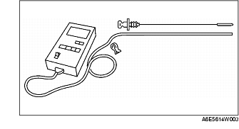
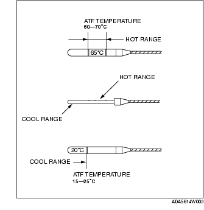

Automatic transaxle fluid (ATF) inspection [FN4A-EL]
Automatic Transaxle Fluid (ATF) Condition Inspection
1. One way of determining whether the transaxle should be disassembled is by noting:
ATF Condition
Automatic Transaxle Fluid (ATF) Level Inspection
- • The ATF amount varies according to ATF's temperature. Therefore, when checking the ATF level or replacing the ATF, use a thermometer to measure the temperature then adjust the ATF amount to the specified level according to the specified temperature.
1. Park the vehicle on level ground.
2. Apply the parking brake and position wheel chocks securely to prevent the vehicle from rolling.
3. Adjust the length or thermistor probe so that the length is the same as the depth gauge, and hold the probe with a paper holder. Insert into the filler tube and measure the temperature.

- • If necessary, inspect the ATF before warming up the engine. In this case, use the cool range.15-25 °C {59-77 °F}
4. Warm up the engine until the ATF reaches 60-70 °C {140-158 °F}.
5. Shift the selector lever and pause momentarily in each range (D-L) while depressing the brake pedal.
6. Shift the selector lever to P position.
7. Verify that the ATF level is in the HOT range (65 °C {149 °F}) while the engine is idling.

ATF type